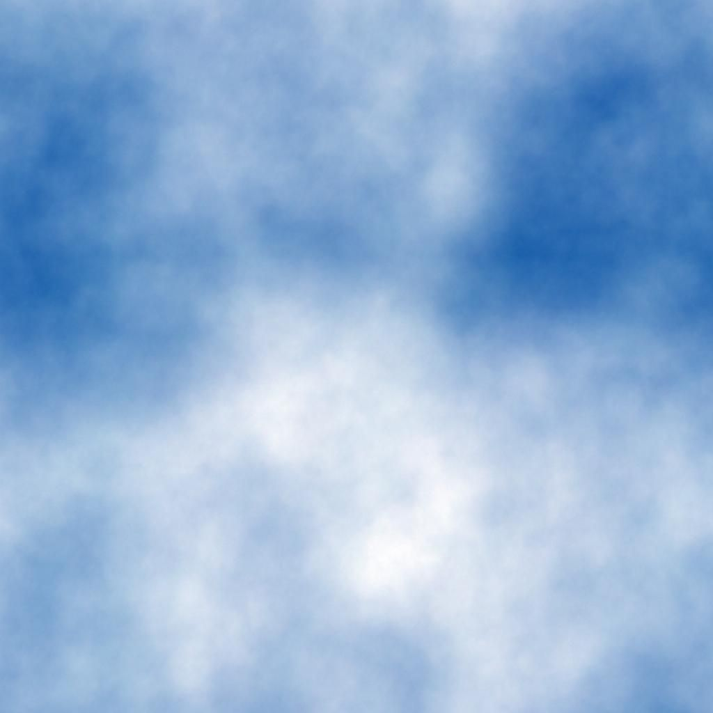

Your browser doesn't support the HTML5 canvas element

Controls:
w : Move Forward
a : Move Left
s : Move Backward
d : Move Right
Left Arrow : Rotate Camera Left
Right Arrow : Rotate Camera Right
t : top view
Load File